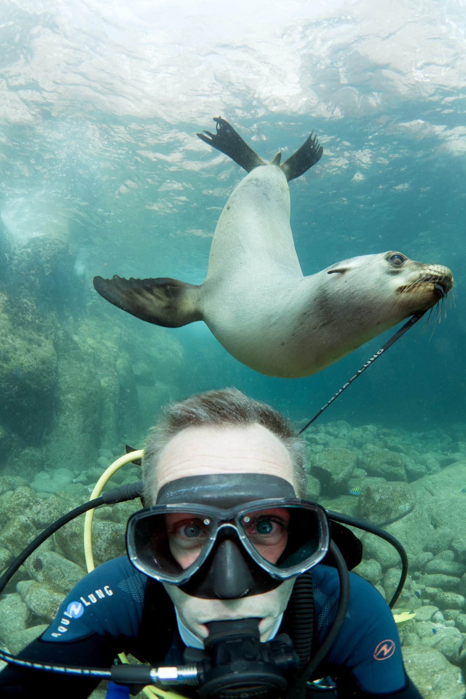
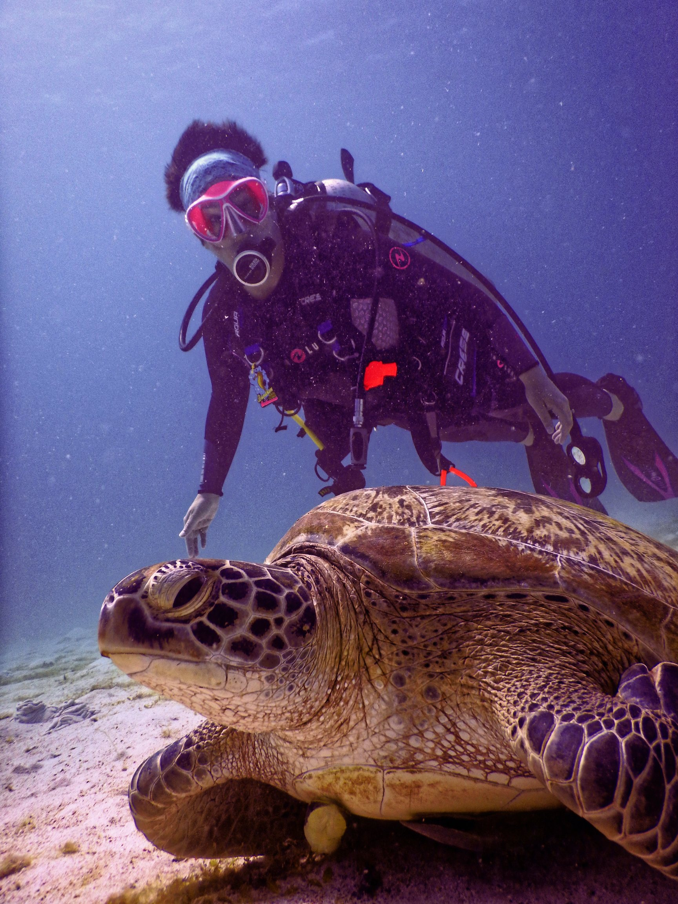

Diving and it's benefits

There are many reasons to learn to scuba dive, from the interaction
with underwater creatures such as coral, fish, turtles, seals and
sometimes even sharks or large marine mammals, to the tranquility and
freedom being under the water can give you, scuba diving is one of the
most incrediable adventures you will ever experience!
Not only all that, but diving can be done all over the globe and in
different climates, and at different times of the year you get a
different experience so there's something new to be seen and learnt
every time you go!
As well as the interaction with marine wildlife
scuba diving brings, gaining your open water licence allows you to
actively participate in preserving and protecting these vunerable
underwater habitats both locally and globally. Project Aware connects
the passion for diving with the purpose of marine conservation.
Working towards a cleaner, healthier ocean they advance programs that
address the greatest threats facing the ocean and you can be a part of
this! From planting coral, to collecting plastic from the ocean floor
there's plenty for divers to do to help protect the underwater
habitats of the creatures that live there. Over 300 million tons of
plastic are produced every year for use in a wide variety of
applications. At least 8 million tons of plastic end up in our oceans
every year, and make up 80% of all marine debris from surface waters
to deep-sea sediments. Marine species ingest or are entangled by
plastic debris, which causes severe injuries and deaths. Tropical
coral reefs are the most diverse marine ecosystems on earth, giving
shelter to thousands of animal species. Many millions of people depend
on fisheries, tourism and coastal protection provided by healthy coral
reefs. Yet today, coral reefs are dying at an alarming rate all around
the globe Corals build the reef structure and provide the basis for a
functioning coral reef ecosystem. Without corals, reefs will degrade
and vanish within years. At present, coral reefs are facing multiple
stresses such as pollution, overfishing, and, overall, the ongoing
climate change―consequently raising sea water temperatures and causing
coral bleaching worldwide. As a result, over 50 percent of the world’s
coral reefs have died in the last 30 years and up to 90 percent may
die within the next century—very few pristine coral reefs still exist.
With those facts, who wouldnt want to get involved?!

And it's not just the wildlife that benefit!
Whilst diving you will meet like-minded individuals who share a common passion and
this makes you feel part of a community. It is always easy to make
friends and meet new people. Moreover, diving promotes camaraderie,
equality and empowerment. Breathing slowly and deeply, which is whats
done when you dive, allows you to get into a calm, relaxing state of
mind. This contributes to a positive attitude and can prevent
depression.
What a mental health boost!
Seawater is particularly beneficial to the skin, increasing its
elasticity and improving its outer appearance. At the same time,
sunlight gives a boost to your vitamin D levels that are essential for
the absorption of calcium in the bones to make them healthier and
stronger. Vitamin D does not only increase the rate of absorption of
calcium, it also helps the cells pass calcium to each other. This
higher absorption rate of calcium helps to keep the bones healthy and
strong. Exposure to sunlight also helps to increase endorphin
production within our brains, which generates feelings of joy and
happiness. Diving improves self-perception due to the fact that it
happens in an environment that is different from ours – the sea – and
being able to handle it makes you feel confident and fulfilled! Diving
can also help with emotional wellbeing, stress and can improve
concentration capacity! It is proven that in one hour of scuba diving
you burn abound 500 calories, which is as much as a one hour work out
on cardio in the gym! Because of the natural resistance of water you
train your muscles moving around, and you probably don’t even notice.
While you are looking around and enjoying the marine life, you train
your core, back muscles and glutes, effortlessly! Not to mention when
you have to carry all your tanks and weights, which is basically the
same as lifting weights. Not to mention other physical benefits such
as...
- Improved blood circulation
- Reduced bloody pressure
- Increased strength and flexibility of muscles